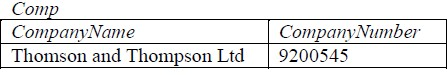
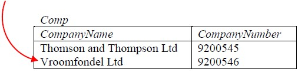
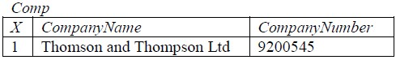
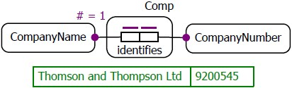
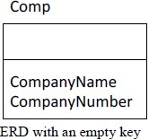
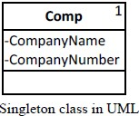

A singleton relation The singleton is a concept common to mathematics, database theory and object oriented design patterns. is a relation consisting of exactly one tuple. In relational database terms it can be formally defined as the value of a nonempty relation variable with a key of ∅ (the empty set), meaning the key has no attributes at all. The empty set of attributes is sometimes also written as {} and that’s the notation used in the remainder of this paper.
A singleton can have any number of (non-key) attributes. Here’s an example of a singleton called Comp with two attributes:

Encountering this for the first time, some people’s reaction is that it seems a slightly odd construction – who needs a table with just one row? In fact such tables are frequently useful. Oracle considers the singleton such a useful object that one is built into every database as a system table called DUAL. Before table-value constructors were introduced in SQL92, standard SQL had no way to create a row in a SELECT statement without querying a table. Querying a singleton table provides a useful way to “construct” a result set from nothing. E.g.:
SELECT 'Hello world' col FROM DUAL;
More generally, singletons are useful for what might be described as “parameter” tables, meaning any kind of standalone value. Examples might be the company name and number in a single company database (the Comp table shown above) or a numerical constant that forms part of a financial model; any value that isn’t defined by another key attribute.
How to implement such a table in SQL? Here’s a first attempt at creating the Comp table for company name and number:
CREATE TABLE Comp (CompanyName VARCHAR(128) NOT NULL PRIMARY KEY, CompanyNumber VARCHAR(8) NOT NULL UNIQUE);
These constraints are wrong though. Specifying the CompanyName and CompanyNumber as keys is not sufficient because the table will still permit multiple rows that don’t violate the uniqueness constraints:

If such a table were joined, for example, to the sales ledger in order to populate the company name on invoices then the unwanted effect would be to output two rows per invoice instead of one. Even if the above table did only ever contain one row, the schema design is at best an ambiguous one. It won’t necessarily be clear to other users of the database that this table is intended to have only one row because its keys don’t enforce that single row constraint A singleton relation Despite its obvious weakness I have seen examples of this flawed implementation in print, online and in practice. For example, see Database Design for Smarties by R. J. Muller, pub. Morgan Kaufmann, 1999, page 281.
What’s needed is an empty key: {}, which will have the effect of constraining data in the table to no more than one row. The concept of an empty key needs some more explanation, but first let’s sees how to implement it in SQL. Unfortunately SQL doesn’t allow the column list of a PRIMARY KEY or UNIQUE key constraint to be empty. The following is not valid syntax:
ALTER TABLE Comp ADD CONSTRAINT X PRIMARY KEY ( );
There is a workaround however. We define a column as unique and then add a check constraint to restrict that column to a single value. The effect is to limit the table to at-most one row.
CREATE TABLE Comp (X SMALLINT NOT NULL DEFAULT (1) CHECK (X=1) UNIQUE, CompanyName VARCHAR(128) NOT NULL, CompanyNumber VARCHAR(8) NOT NULL);

Explanation: X is required to be unique and because X is also required to be 1 there can only be one X and only one row in this table. Incidentally, this technique generalises as well. By making the CHECK constraint <= some number, N, instead of = 1 it is possible to limit the table to N rows.
The workaround of using the “X” column is the most widely supported method of implementing the key in SQL. Other alternatives are also possible without adding a “dummy” column to the table. For example by using a subquery in a CHECK constraint or database ASSERTION.
ALTER TABLE Comp ADD CONSTRAINT X CHECK ( ( SELECT COUNT(*) FROM Comp) = 1 );
Unfortunately, the necessary syntax for CHECK or CREATE ASSERTION is not always supported by SQL implementations. Proprietary and vendor-specific code may be required instead, which is something beyond the scope of this paper.
Notice that in the CREATE TABLE statement for the Comp table I’ve used a UNIQUE constraint on the X column rather than a PRIMARY KEY constraint - even though the practical effect of using PRIMARY KEY would have been the same. The reason for using UNIQUE instead of PRIMARY KEY is that X is not the primary key of Comp. X is a proper superkey, meaning that it contains more attributes than the key. As already mentioned the key is actually the empty set: {}. In fact {} is the only possible key for a singleton table.
A key is a minimal set of attributes that is unique across all possible values of a relation variable. “Minimal” means that if any attribute is removed from the set then the uniqueness property is no longer satisfied; the key is therefore the smallest set of attributes needed to ensure that every tuple can be uniquely identified. In the case of a relation variable permitting only a single tuple (a singleton relation) no attribute is necessary to distinguish one tuple from any other. {} is therefore the only minimally unique set of attributes in a singleton. Since the empty set is by definition a subset of every other set of attributes, it follows that any non-empty set of attributes in a singleton must be a superkey but is not a key.
The degree of a key is the number of attributes it has. An empty key is called a zero degree key. Hopefully it is clear from the example under discussion that having a key of zero degree doesn’t mean the same as having no key at all. A key is still a key however many attributes it has and whatever database constraint syntax is used to define it. For more on empty keys and dependencies, see: dpxo.net/articles/zerodegree.htm
Singleton objects can be modelled in an Object Role Modelling orm.net diagram. In the ORM diagram shown here the cardinality constraint “# = 1” is used to specify explicitly that there is only one company name and implicitly that there is only one company number (because of the one-to-one relationship indicated by the internal uniqueness constraint: ).

Representation in an Entity Relationship diagram is slightly trickier. ER notations rely on named key attributes to specify uniqueness. In ER notations key attributes are sometimes separated from non-key attributes by a horizontal line. It’s possible simply to leave the key attributes empty but this risks giving the impression that the diagram is incomplete. Probably the best solution is to add an annotation to the diagram to make the meaning clear.

UML has a specific notation for a singleton: a superscript number “1” in the top right corner specifies that there can only be a single instance of the class. This rarely seems to be used with the UML data modelling profile – at least I haven’t found any examples of it.

In my experience CASE tools don’t generally support empty keys and probably won’t be able to create the necessary constraints directly from models like these.
Copyright © 2013 David Portas. All rights reserved.